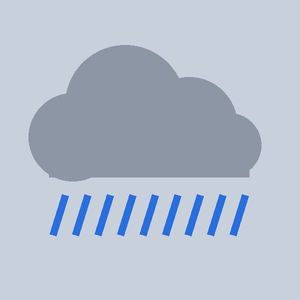
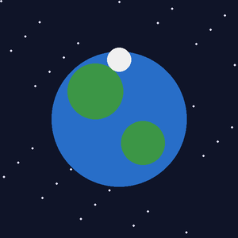
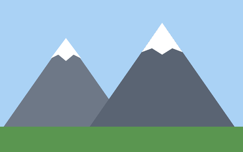
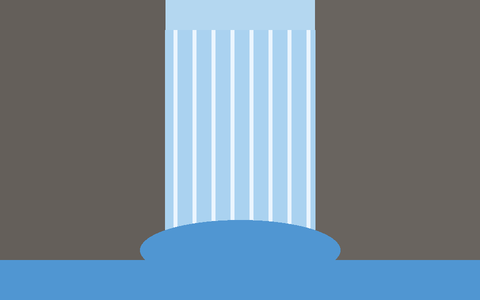

Dodajesz obrazy z archiwum do projektu, wyświetlasz je w ImageView o zadanych wymiarach i zmieniasz z kodu. Budujesz galerię z przewijaniem w obie strony na tablicach równoległych.
1. Cel
Po wykonaniu tego bloku będziesz potrafił:
- skopiować obrazy do
res/drawablez poprawnymi nazwami i użyć ich w XML (@drawable/…) i w Javie (R.drawable.…), - ustawić wymiary i dopasowanie obrazu (
layout_height,scaleType,adjustViewBounds), - zmienić obraz w reakcji na zdarzenie (
setImageResource), - przechowywać obrazy i opisy w tablicach równoległych i przechodzić po nich cyklicznie w przód i w tył.
Plan czasu (4 × 45 min = 180 min)
| Przypomnienie | 15 min |
| Przykład | 10 min |
| Mikroćwiczenia | 25 min |
| Zadanie prowadzone | 35 min |
| Zadanie samodzielne | 35 min |
| Zadanie INF.04 | 50 min |
| Checklista + mini-test | 10 min |
| Razem | 180 min |
|---|
Powiązanie z arkuszami: obrazy z archiwum w zasobach — Arkusze 02, 12, 13; obraz na całą szerokość — 02; wysokości 60 i 150 — 12, 13; obraz zmieniany z kodu (tablica identyfikatorów) — 12; nawigacja poprzedni/następny — desktop Arkusz_11.
2. Krótkie przypomnienie
Obraz z archiwum → projekt
- Rozpakuj archiwum (na egzaminie jest zabezpieczone hasłem podanym w arkuszu).
- Skopiuj pliki (Ctrl+C) i wklej w Android Studio na folder res → drawable (Ctrl+V) → wybierz katalog
drawable(bez dopisku-v24). - Nazwa zasobu: tylko małe litery, cyfry i
_, zaczyna się literą.obraz.jpg→ OK;Obraz 1.JPG,000-zdjecie.jpg,pralka-1.jpg→ błąd budowania. Zmień nazwę: prawy przycisk → Refactor → Rename (Shift+F6). - W XML:
@drawable/obraz(bez rozszerzenia). W Javie:R.drawable.obraz.
ImageView
<ImageView
android:id="@+id/ivObraz"
android:layout_width="match_parent"
android:layout_height="150dp"
android:src="@drawable/obraz"
android:scaleType="centerCrop"
android:contentDescription="Opis obrazu" />scaleType | Efekt | Kiedy |
|---|---|---|
centerCrop | wypełnia cały obszar, przycina brzegi | „obraz wypełnia całą szerokość strony” (Arkusz_02) |
fitCenter (domyślny) | cały obraz widoczny, mogą zostać paski | ikony, kości, „obrazy widoczne w całości” (Arkusz_12) |
fitXY | rozciąga bez zachowania proporcji | rzadko — zniekształca |
android:adjustViewBounds="true" + layout_height="wrap_content" → wysokość wynika z proporcji obrazu.
Zmiana obrazu z kodu
ivObraz.setImageResource(R.drawable.deszcz);Tablice równoległe i cykl w obie strony
private final int[] obrazy = {R.drawable.gory, R.drawable.las, R.drawable.jezioro};
private final String[] nazwy = {"Góry", "Las", "Jezioro"};
private int indeks = 0;
// następny: 0 → 1 → 2 → 0
indeks = (indeks + 1) % obrazy.length;
// poprzedni: 0 → 2 → 1 → 0 (+ długość, żeby nie było liczby ujemnej)
indeks = (indeks - 1 + obrazy.length) % obrazy.length;
ivObraz.setImageResource(obrazy[indeks]);
tvNazwa.setText(nazwy[indeks]);R.drawable.gory to liczba (int), nie tekst. Tablica obrazów ma typ int[], a parametr metody — int.
Ćwiczenie natychmiastowe: skopiuj slonce.png i deszcz.png (zasoby przykładu) do projektu i uruchom przykład. Potem zmień scaleType na fitCenter i porównaj.
3. Przykład
Obraz na całą szerokość i dwa przyciski, które go podmieniają. Zasoby: slonce.png, deszcz.png (w zasobach zadania prowadzonego).

<?xml version="1.0" encoding="utf-8"?>
<LinearLayout xmlns:android="http://schemas.android.com/apk/res/android"
android:id="@+id/main"
android:layout_width="match_parent"
android:layout_height="match_parent"
android:orientation="vertical">
<ImageView
android:id="@+id/ivObraz"
android:layout_width="match_parent"
android:layout_height="200dp"
android:contentDescription="Pogoda"
android:scaleType="centerCrop"
android:src="@drawable/slonce" />
<LinearLayout
android:layout_width="match_parent"
android:layout_height="wrap_content"
android:orientation="horizontal">
<Button
android:id="@+id/btnSlonce"
android:layout_width="0dp"
android:layout_height="wrap_content"
android:layout_weight="1"
android:text="SŁOŃCE" />
<Button
android:id="@+id/btnDeszcz"
android:layout_width="0dp"
android:layout_height="wrap_content"
android:layout_weight="1"
android:text="DESZCZ" />
</LinearLayout>
</LinearLayout>package com.example.egzamin;
import android.os.Bundle;
import android.widget.Button;
import android.widget.ImageView;
import androidx.appcompat.app.AppCompatActivity;
public class MainActivity extends AppCompatActivity {
@Override
protected void onCreate(Bundle savedInstanceState) {
super.onCreate(savedInstanceState);
setContentView(R.layout.activity_main);
ImageView ivObraz = findViewById(R.id.ivObraz);
Button btnSlonce = findViewById(R.id.btnSlonce);
Button btnDeszcz = findViewById(R.id.btnDeszcz);
// plik res/drawable/deszcz.png -> identyfikator R.drawable.deszcz
btnSlonce.setOnClickListener(v -> ivObraz.setImageResource(R.drawable.slonce));
btnDeszcz.setOnClickListener(v -> ivObraz.setImageResource(R.drawable.deszcz));
}
}4. Mikroćwiczenia
Ćwiczenie 6.1 — Poprawne nazwy
Które pliki można wkleić do drawable bez zmiany nazwy? pralka.jpg, Odkurzacz.jpg, question.jpg, kosc-1.png, 1.png, obraz_2.png, 000-zdjecie.jpg. Zaproponuj nowe nazwy dla błędnych.
Sprawdź odpowiedź
Poprawne: pralka.jpg, question.jpg, obraz_2.png. Zmień: Odkurzacz.jpg → odkurzacz.jpg, kosc-1.png → kosc1.png lub kosc_1.png, 1.png → kosc1.png, 000-zdjecie.jpg → zdjecie_000.jpg.
Ćwiczenie 6.2 — Specyfikacja obrazu
Napisz ImageView wg Arkusza_13: obraz pralka, wysokość 150, marginesy lewy, prawy i dolny 20, górny 0.
Sprawdź odpowiedź
<ImageView
android:id="@+id/ivPralka"
android:layout_width="wrap_content"
android:layout_height="150dp"
android:adjustViewBounds="true"
android:layout_marginStart="20dp"
android:layout_marginEnd="20dp"
android:layout_marginBottom="20dp"
android:layout_marginTop="0dp"
android:src="@drawable/pralka"
android:contentDescription="Pralka" />Ćwiczenie 6.3 — Pięć obrazów w rzędzie
Arkusz_12: „pięć obrazów … widoczne w całości, nie stykają się, wypełniają całą szerokość; wysokość 60, marginesy 9”. Jakie atrybuty ma każdy ImageView?
Sprawdź odpowiedź
layout_width="0dp", layout_weight="1", layout_height="60dp", layout_margin="9dp", scaleType="fitCenter" (widoczne w całości), src="@drawable/question". Wszystkie w poziomym LinearLayout (tło białe).
Ćwiczenie 6.4 — Przewidź indeks
Tablica ma 4 elementy, indeks = 0. Kliknięcia: poprzedni, poprzedni, następny, następny, następny. Jaki jest indeks po każdym kliknięciu?
Sprawdź odpowiedź
3, 2, 3, 0, 1. Wzór wstecz: (i - 1 + 4) % 4.
Ćwiczenie 6.5 — Znajdź błąd
String[] obrazy = {R.drawable.gory, R.drawable.las}; — dlaczego się nie kompiluje?
Sprawdź odpowiedź
Identyfikatory zasobów są liczbami. Poprawnie: int[] obrazy = {R.drawable.gory, R.drawable.las};.
5. Zadanie prowadzone
Pogoda na jutro
Cztery przyciski zmieniają obraz i opis pogody. Jedna metoda z dwoma parametrami obsługuje wszystkie przyciski.
Działanie: SŁOŃCE → slonce, „Słonecznie — weź okulary”; CHMURY → chmury, „Zachmurzenie — przyda się bluza”; DESZCZ → deszcz, „Deszcz — weź parasol”; ŚNIEG → snieg, „Śnieg — czapka i rękawiczki”. Na starcie widać słońce.
Kroki:
- Skopiuj 4 obrazy do
res/drawable. - XML: tytuł,
ImageView(wys. 200dp, margines 10dp,fitCenter, obraz startowyslonce), napis opisu, dwa rzędy po dwa przyciski (cztery w jednym rzędzie się nie mieszczą). - Java: metoda
pokaz(int obraz, String opis). - Cztery obsługi przycisków w jednej linii każda.
Zasoby do zadania


Pobierz wszystkie: zasoby_b06-prowadzone.zip. Obrazy skopiuj do app/src/main/res/drawable (nazwy: małe litery, bez spacji i myślników).
Pomoc — otwieraj po kolei i tylko wtedy, gdy utkniesz:
Poziom 1 — kierunek
Metoda pokaz ustawia dwie rzeczy: obraz i tekst. Każdy przycisk wywołuje ją z innymi argumentami.
Poziom 2 — konkretna wskazówka
Obsługa: btnDeszcz.setOnClickListener(v -> pokaz(R.drawable.deszcz, "Deszcz — weź parasol"));
Poziom 3 — pseudokod / struktura
pokaz(obraz: int, opis: String):
ivPogoda.setImageResource(obraz)
tvOpis.setText(opis)Poziom 4 — fragment implementacji
private void pokaz(int obraz, String opis) {
ivPogoda.setImageResource(obraz);
tvOpis.setText(opis);
}Poziom 5 — pełne rozwiązanie
<?xml version="1.0" encoding="utf-8"?>
<LinearLayout xmlns:android="http://schemas.android.com/apk/res/android"
android:id="@+id/main"
android:layout_width="match_parent"
android:layout_height="match_parent"
android:orientation="vertical"
android:background="#F5F9FF">
<TextView
android:id="@+id/tvTytul"
android:layout_width="match_parent"
android:layout_height="wrap_content"
android:background="#1565C0"
android:padding="10dp"
android:text="Pogoda na jutro"
android:textColor="#FFFFFF"
android:textSize="28sp" />
<ImageView
android:id="@+id/ivPogoda"
android:layout_width="match_parent"
android:layout_height="200dp"
android:layout_margin="10dp"
android:contentDescription="Ikona pogody"
android:scaleType="fitCenter"
android:src="@drawable/slonce" />
<TextView
android:id="@+id/tvOpis"
android:layout_width="match_parent"
android:layout_height="wrap_content"
android:gravity="center"
android:text="Słonecznie — weź okulary"
android:textSize="20sp" />
<LinearLayout
android:layout_width="match_parent"
android:layout_height="wrap_content"
android:layout_marginHorizontal="10dp"
android:layout_marginTop="10dp"
android:orientation="horizontal">
<Button
android:id="@+id/btnSlonce"
android:layout_width="0dp"
android:layout_height="wrap_content"
android:layout_weight="1"
android:layout_margin="4dp"
android:backgroundTint="#1565C0"
android:text="SŁOŃCE" />
<Button
android:id="@+id/btnChmury"
android:layout_width="0dp"
android:layout_height="wrap_content"
android:layout_weight="1"
android:layout_margin="4dp"
android:backgroundTint="#1565C0"
android:text="CHMURY" />
</LinearLayout>
<LinearLayout
android:layout_width="match_parent"
android:layout_height="wrap_content"
android:layout_marginHorizontal="10dp"
android:orientation="horizontal">
<Button
android:id="@+id/btnDeszcz"
android:layout_width="0dp"
android:layout_height="wrap_content"
android:layout_weight="1"
android:layout_margin="4dp"
android:backgroundTint="#1565C0"
android:text="DESZCZ" />
<Button
android:id="@+id/btnSnieg"
android:layout_width="0dp"
android:layout_height="wrap_content"
android:layout_weight="1"
android:layout_margin="4dp"
android:backgroundTint="#1565C0"
android:text="ŚNIEG" />
</LinearLayout>
</LinearLayout>package com.example.egzamin;
import android.os.Bundle;
import android.widget.Button;
import android.widget.ImageView;
import android.widget.TextView;
import androidx.appcompat.app.AppCompatActivity;
public class MainActivity extends AppCompatActivity {
private ImageView ivPogoda;
private TextView tvOpis;
@Override
protected void onCreate(Bundle savedInstanceState) {
super.onCreate(savedInstanceState);
setContentView(R.layout.activity_main);
ivPogoda = findViewById(R.id.ivPogoda);
tvOpis = findViewById(R.id.tvOpis);
Button btnSlonce = findViewById(R.id.btnSlonce);
Button btnChmury = findViewById(R.id.btnChmury);
Button btnDeszcz = findViewById(R.id.btnDeszcz);
Button btnSnieg = findViewById(R.id.btnSnieg);
btnSlonce.setOnClickListener(v -> pokaz(R.drawable.slonce, "Słonecznie — weź okulary"));
btnChmury.setOnClickListener(v -> pokaz(R.drawable.chmury, "Zachmurzenie — przyda się bluza"));
btnDeszcz.setOnClickListener(v -> pokaz(R.drawable.deszcz, "Deszcz — weź parasol"));
btnSnieg.setOnClickListener(v -> pokaz(R.drawable.snieg, "Śnieg — czapka i rękawiczki"));
}
// parametr typu int, bo identyfikator zasobu z klasy R to liczba
private void pokaz(int obraz, String opis) {
ivPogoda.setImageResource(obraz);
tvOpis.setText(opis);
}
}Pliki rozwiązania: rozwiazania/b06_prowadzone/ (pierwsza linia package musi odpowiadać Twojemu projektowi).
6. Zadanie samodzielne
Galeria planet ← →
Galeria z przewijaniem w obie strony z „zawijaniem” (po ostatniej pierwsza, przed pierwszą ostatnia) — ten sam mechanizm co w desktopowym Arkuszu_11.

- Kolejność: Merkury, Wenus, Ziemia, Mars. Napis: „Planeta <nr>/<liczba>: <nazwa>”.
- „>” pokazuje następną, po Marsie — Merkurego. „<” pokazuje poprzednią, przed Merkurym — Marsa.
- Obraz na całą szerokość, wysokość 260dp, wypełniony (przycięty). Tło ekranu
#0F1428, biały napis. - Obrazy i nazwy w tablicach, bez
if/switchna każdą planetę. Liczba planet nie może być wpisana na sztywno (użyjlength). - W XML znak „<” zapisz jako
<, a „>” jako>.
Zasoby do zadania


Pobierz wszystkie: zasoby_b06-samodzielne.zip. Obrazy skopiuj do app/src/main/res/drawable (nazwy: małe litery, bez spacji i myślników).
Pomoc — otwieraj po kolei i tylko wtedy, gdy utkniesz:
Poziom 1 — kierunek
Potrzebujesz dwóch tablic (int[] i String[]) oraz pola indeks. Oba przyciski zmieniają indeks i wywołują tę samą metodę pokazującą.
Poziom 2 — konkretna wskazówka
Następny: (indeks + 1) % obrazy.length; poprzedni: (indeks - 1 + obrazy.length) % obrazy.length. Numer dla człowieka to indeks + 1.
Poziom 3 — pseudokod / struktura
pokaz():
obraz ← obrazy[indeks]
napis ← "Planeta " + (indeks+1) + "/" + długość + ": " + nazwy[indeks]
onCreate: … ; pokaz() ← ustawia stan początkowyPoziom 4 — fragment implementacji
btnPoprzednia.setOnClickListener(v -> {
indeks = (indeks - 1 + obrazy.length) % obrazy.length;
pokaz();
});Poziom 5 — pełne rozwiązanie
<?xml version="1.0" encoding="utf-8"?>
<LinearLayout xmlns:android="http://schemas.android.com/apk/res/android"
android:id="@+id/main"
android:layout_width="match_parent"
android:layout_height="match_parent"
android:orientation="vertical"
android:background="#0F1428">
<ImageView
android:id="@+id/ivPlaneta"
android:layout_width="match_parent"
android:layout_height="260dp"
android:contentDescription="Planeta"
android:scaleType="centerCrop"
android:src="@drawable/merkury" />
<TextView
android:id="@+id/tvNazwa"
android:layout_width="match_parent"
android:layout_height="wrap_content"
android:layout_margin="16dp"
android:gravity="center"
android:text="Planeta 1/4: Merkury"
android:textColor="#FFFFFF"
android:textSize="24sp" />
<LinearLayout
android:layout_width="match_parent"
android:layout_height="wrap_content"
android:layout_marginHorizontal="16dp"
android:orientation="horizontal">
<Button
android:id="@+id/btnPoprzednia"
android:layout_width="0dp"
android:layout_height="wrap_content"
android:layout_weight="1"
android:layout_marginEnd="8dp"
android:text="<" />
<Button
android:id="@+id/btnNastepna"
android:layout_width="0dp"
android:layout_height="wrap_content"
android:layout_weight="1"
android:layout_marginStart="8dp"
android:text=">" />
</LinearLayout>
</LinearLayout>package com.example.egzamin;
import android.os.Bundle;
import android.widget.Button;
import android.widget.ImageView;
import android.widget.TextView;
import androidx.appcompat.app.AppCompatActivity;
public class MainActivity extends AppCompatActivity {
// tablice równoległe: ten sam indeks = ta sama planeta
private final int[] obrazy = {R.drawable.merkury, R.drawable.wenus, R.drawable.ziemia, R.drawable.mars};
private final String[] nazwy = {"Merkury", "Wenus", "Ziemia", "Mars"};
private int indeks = 0;
private ImageView ivPlaneta;
private TextView tvNazwa;
@Override
protected void onCreate(Bundle savedInstanceState) {
super.onCreate(savedInstanceState);
setContentView(R.layout.activity_main);
ivPlaneta = findViewById(R.id.ivPlaneta);
tvNazwa = findViewById(R.id.tvNazwa);
Button btnPoprzednia = findViewById(R.id.btnPoprzednia);
Button btnNastepna = findViewById(R.id.btnNastepna);
btnNastepna.setOnClickListener(v -> {
indeks = (indeks + 1) % obrazy.length; // 3 -> 0
pokaz();
});
btnPoprzednia.setOnClickListener(v -> {
indeks = (indeks - 1 + obrazy.length) % obrazy.length; // 0 -> 3
pokaz();
});
pokaz();
}
private void pokaz() {
ivPlaneta.setImageResource(obrazy[indeks]);
tvNazwa.setText("Planeta " + (indeks + 1) + "/" + obrazy.length + ": " + nazwy[indeks]);
}
}Pliki rozwiązania: rozwiazania/b06_samodzielne/ (pierwsza linia package musi odpowiadać Twojemu projektowi).
7. Zadanie w stylu INF.04
Przewodnik po szlakach
Wykonaj aplikację mobilną będącą fragmentem przewodnika turystycznego. Do wykonania zadania wykorzystaj obrazy z archiwum zasoby_b06-inf.zip.
| INTERFEJS | Co musi znaleźć się na ekranie? |
| DANE | Co wpisuje / wybiera użytkownik? |
| ZDARZENIA | Co uruchamia działania? |
| LOGIKA | Co trzeba policzyć / sprawdzić / zmienić? |
| WYNIK | Co aplikacja wyświetla lub zmienia? |
| WYGLĄD | Kolory, rozmiary, marginesy, rozkłady? |
Porównaj swoją analizę z wzorcową
| INTERFEJS | tytuł, obraz, nazwa szlaku, opis, 2 przyciski w rzędzie, rząd: przycisk POLUB + napis polubień, autor |
| DANE | brak pól — dane szlaków w tablicach w kodzie |
| ZDARZENIA | POPRZEDNI, NASTĘPNY, POLUB |
| LOGIKA | indeks cykliczny w obie strony; osobny licznik polubień dla każdego szlaku (tablica int[]) |
| WYNIK | obraz, nazwa, opis i „Polubienia: n” bieżącego szlaku |
| WYGLĄD | tło #F1F8E9; tytuł #2E7D32 biały; obraz 180dp na całą szerokość, przycięty; nazwa 22sp pogrubiona; opis szary; przyciski #2E7D32; POLUB #F9A825 czarny; napis polubień do prawej |


Elementy aplikacji:
- Napis „Szlaki turystyczne”.
- Obraz szlaku (w stanie początkowym
gory). - Napis z nazwą szlaku i napis z opisem.
- Przyciski „POPRZEDNI” i „NASTĘPNY” umiejscowione obok siebie.
- Przycisk „POLUB” i napis „Polubienia: 0” w jednym rzędzie.
- Napis „Autor: ”, dalej numer zdającego.
Dane szlaków (w tej kolejności): gory — „Szlak graniowy”, „12 km, trudny, piękne widoki ze szczytu”; jezioro — „Wokół jeziora”, „6 km, łatwy, dla rodzin z dziećmi”; las — „Leśna ścieżka”, „9 km, średni, dużo cienia”; wodospad — „Do wodospadu”, „4 km, łatwy, najlepszy wiosną”.
Działanie aplikacji:
- „NASTĘPNY” pokazuje kolejny szlak (obraz, nazwę, opis); po ostatnim — pierwszy.
- „POPRZEDNI” pokazuje poprzedni szlak; przed pierwszym — ostatni.
- „POLUB” zwiększa o 1 liczbę polubień aktualnie wyświetlanego szlaku. Każdy szlak ma własny licznik, zapamiętywany w trakcie działania aplikacji (po powrocie do szlaku widać jego polubienia).
Założenia aplikacji:
- Interfejs w XML; rozkład liniowy pionowy z zagnieżdżonymi rozkładami poziomymi.
- Obrazy zapisane w zasobach aplikacji. Obraz: wysokość 180, wypełnia całą szerokość (może być przycięty).
- Tło strony #F1F8E9; tytuł: tło #2E7D32, biała czcionka, największa, marginesy wewnętrzne 10.
- Nazwa szlaku 22sp pogrubiona; opis w kolorze Gray (#808080).
- Przyciski POPRZEDNI/NASTĘPNY: tło #2E7D32, biała czcionka, razem wypełniają szerokość. Przycisk POLUB: tło #F9A825, czarna czcionka. Napis polubień wyrównany do prawej.
- Obrazy, nazwy, opisy i liczniki polubień przechowywane w tablicach.
Zasoby do zadania


Pobierz wszystkie: zasoby_b06-inf.zip. Obrazy skopiuj do app/src/main/res/drawable (nazwy: małe litery, bez spacji i myślników).
Checklista zadania
Pomoc — otwieraj po kolei i tylko wtedy, gdy utkniesz:
Poziom 1 — kierunek
To połączenie galerii (tablice + indeks cykliczny) z licznikiem z bloku 2. Nowe jest tylko to, że licznik polubień też jest tablicą — po jednym elemencie na szlak.
Poziom 2 — konkretna wskazówka
private final int[] polubienia = new int[4]; — tablica liczb startuje z zerami. Polubienie: polubienia[aktualny]++;.
Poziom 3 — pseudokod / struktura
pola: obrazy[], nazwy[], opisy[], polubienia[4], aktualny = 0
NASTĘPNY : aktualny = (aktualny + 1) % 4 ; pokazSzlak()
POPRZEDNI: aktualny = (aktualny - 1 + 4) % 4 ; pokazSzlak()
POLUB : polubienia[aktualny]++ ; pokazSzlak()
pokazSzlak(): obraz, nazwa, opis, "Polubienia: " + polubienia[aktualny]Poziom 4 — fragment implementacji
private void pokazSzlak() {
ivSzlak.setImageResource(obrazy[aktualny]);
tvNazwa.setText(nazwy[aktualny]);
tvOpis.setText(opisy[aktualny]);
tvPolubienia.setText("Polubienia: " + polubienia[aktualny]);
}Poziom 5 — pełne rozwiązanie
<?xml version="1.0" encoding="utf-8"?>
<LinearLayout xmlns:android="http://schemas.android.com/apk/res/android"
android:id="@+id/main"
android:layout_width="match_parent"
android:layout_height="match_parent"
android:orientation="vertical"
android:background="#F1F8E9">
<TextView
android:id="@+id/tvTytul"
android:layout_width="match_parent"
android:layout_height="wrap_content"
android:background="#2E7D32"
android:padding="10dp"
android:text="Szlaki turystyczne"
android:textColor="#FFFFFF"
android:textSize="28sp" />
<ImageView
android:id="@+id/ivSzlak"
android:layout_width="match_parent"
android:layout_height="180dp"
android:contentDescription="Zdjęcie szlaku"
android:scaleType="centerCrop"
android:src="@drawable/gory" />
<TextView
android:id="@+id/tvNazwa"
android:layout_width="wrap_content"
android:layout_height="wrap_content"
android:layout_marginStart="10dp"
android:layout_marginTop="10dp"
android:text="Szlak graniowy"
android:textSize="22sp"
android:textStyle="bold" />
<TextView
android:id="@+id/tvOpis"
android:layout_width="match_parent"
android:layout_height="wrap_content"
android:layout_marginHorizontal="10dp"
android:text="12 km, trudny, piękne widoki ze szczytu"
android:textColor="#808080" />
<LinearLayout
android:layout_width="match_parent"
android:layout_height="wrap_content"
android:layout_margin="10dp"
android:orientation="horizontal">
<Button
android:id="@+id/btnPoprzedni"
android:layout_width="0dp"
android:layout_height="wrap_content"
android:layout_weight="1"
android:layout_marginEnd="5dp"
android:backgroundTint="#2E7D32"
android:text="POPRZEDNI"
android:textColor="#FFFFFF" />
<Button
android:id="@+id/btnNastepny"
android:layout_width="0dp"
android:layout_height="wrap_content"
android:layout_weight="1"
android:layout_marginStart="5dp"
android:backgroundTint="#2E7D32"
android:text="NASTĘPNY"
android:textColor="#FFFFFF" />
</LinearLayout>
<LinearLayout
android:layout_width="match_parent"
android:layout_height="wrap_content"
android:layout_marginHorizontal="10dp"
android:gravity="center_vertical"
android:orientation="horizontal">
<Button
android:id="@+id/btnPolub"
android:layout_width="wrap_content"
android:layout_height="wrap_content"
android:backgroundTint="#F9A825"
android:text="POLUB"
android:textColor="#000000" />
<TextView
android:id="@+id/tvPolubienia"
android:layout_width="0dp"
android:layout_height="wrap_content"
android:layout_weight="1"
android:gravity="end"
android:text="Polubienia: 0"
android:textSize="18sp" />
</LinearLayout>
<TextView
android:id="@+id/tvAutor"
android:layout_width="match_parent"
android:layout_height="wrap_content"
android:layout_marginTop="16dp"
android:gravity="center"
android:text="Autor: 00000000000"
android:textColor="#808080" />
</LinearLayout>package com.example.egzamin;
import android.os.Bundle;
import android.widget.Button;
import android.widget.ImageView;
import android.widget.TextView;
import androidx.appcompat.app.AppCompatActivity;
public class MainActivity extends AppCompatActivity {
private final int[] obrazy = {R.drawable.gory, R.drawable.jezioro, R.drawable.las, R.drawable.wodospad};
private final String[] nazwy = {"Szlak graniowy", "Wokół jeziora", "Leśna ścieżka", "Do wodospadu"};
private final String[] opisy = {
"12 km, trudny, piękne widoki ze szczytu",
"6 km, łatwy, dla rodzin z dziećmi",
"9 km, średni, dużo cienia",
"4 km, łatwy, najlepszy wiosną"
};
private final int[] polubienia = new int[4]; // dla każdego szlaku osobny licznik, start: same zera
private int aktualny = 0;
private ImageView ivSzlak;
private TextView tvNazwa, tvOpis, tvPolubienia;
@Override
protected void onCreate(Bundle savedInstanceState) {
super.onCreate(savedInstanceState);
setContentView(R.layout.activity_main);
ivSzlak = findViewById(R.id.ivSzlak);
tvNazwa = findViewById(R.id.tvNazwa);
tvOpis = findViewById(R.id.tvOpis);
tvPolubienia = findViewById(R.id.tvPolubienia);
Button btnPoprzedni = findViewById(R.id.btnPoprzedni);
Button btnNastepny = findViewById(R.id.btnNastepny);
Button btnPolub = findViewById(R.id.btnPolub);
btnNastepny.setOnClickListener(v -> {
aktualny = (aktualny + 1) % obrazy.length;
pokazSzlak();
});
btnPoprzedni.setOnClickListener(v -> {
aktualny = (aktualny - 1 + obrazy.length) % obrazy.length;
pokazSzlak();
});
btnPolub.setOnClickListener(v -> {
polubienia[aktualny]++;
pokazSzlak();
});
pokazSzlak();
}
private void pokazSzlak() {
ivSzlak.setImageResource(obrazy[aktualny]);
tvNazwa.setText(nazwy[aktualny]);
tvOpis.setText(opisy[aktualny]);
tvPolubienia.setText("Polubienia: " + polubienia[aktualny]);
}
}Pliki rozwiązania: rozwiazania/b06_inf/ (pierwsza linia package musi odpowiadać Twojemu projektowi).
8. Checklista
Sprawdź swoją aplikację z zadania INF.04 punkt po punkcie (krok 10 procedury).
9. Mini-test
10. Skończyłeś wcześniej?
Kości z tablicy
Przygotuj tablicę int[] kosci z sześcioma obrazami kości (możesz użyć dowolnych 6 obrazów z zasobów kursu) i przycisk, który pokazuje obraz dla wartości wpisanej w pole (1–6). Uwaga: wartość 1 to indeks 0.
Wskazówka
ivKosc.setImageResource(kosci[wartosc - 1]); — sprawdź zakres, zanim użyjesz indeksu.
Obraz po nazwie (desktop Arkusz_09)
Pole tekstowe + przycisk: po wpisaniu „mars” pokaż R.drawable.mars. Jeśli takiego obrazu nie ma — ukryj obraz.
Wskazówka
int id = getResources().getIdentifier(nazwa, "drawable", getPackageName()); zwraca 0, gdy zasobu nie ma. Ukrycie: ivObraz.setVisibility(View.INVISIBLE) (blok 7).
Licznik polubień wszystkich szlaków
Dodaj napis „Razem polubień: n” — suma całej tablicy liczona pętlą przy każdym polubieniu.